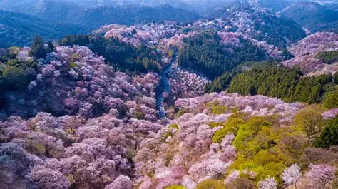
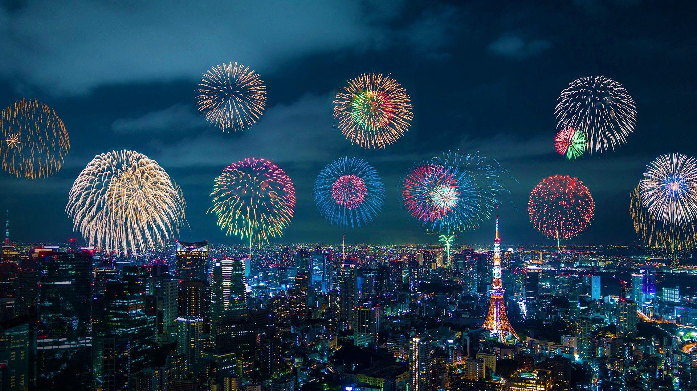
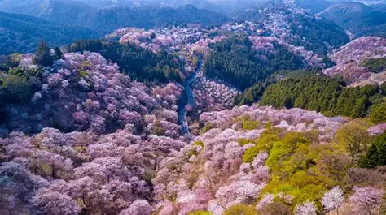
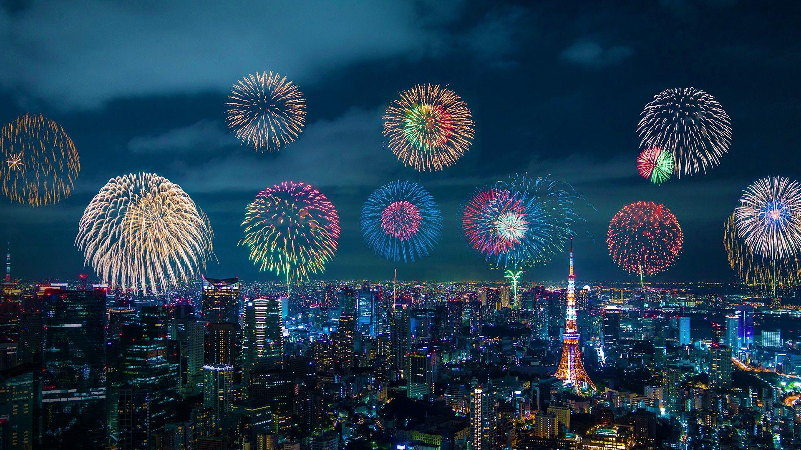

Introduction to Japanese Language & Culture
Explore the essence of Japanese language, traditions, and society and more.
Overview of the Japanese Language
Japanese (日本語 - Nihongo) is the official language of Japan, spoken by over 125 million people. It is a unique language with a rich history, written in a combination of three scripts and shaped by cultural values like respect and harmony.
The Japanese language is context-rich, which means meaning often depends on social relationships and situations. Understanding Japanese requires paying attention to politeness, formality, and subtle cultural cues.
- Sentence Structure: Subject-Object-Verb (SOV). The verb usually comes at the end.
- Grammar: Uses particles like は (wa), が (ga), and を (wo) to indicate grammatical roles.
- Politeness Levels: Casual, polite, and honorific speech (keigo) are essential in different social contexts.
- Phonetics: Relatively simple syllables with five vowels and consistent consonant patterns.
Writing Systems
Hiragana (ひらがな)
Used for native words and grammatical endings.
Katakana (カタカナ)
Used for foreign words and names.
Kanji (漢字)
Chinese characters representing words or ideas.
Learning Japanese is not just about grammar and vocabulary — it is also about understanding Japanese culture, social behavior, and ways of thinking.
Japanese History (日本の歴史)
Japanese history spans thousands of years, shaped by unique traditions, foreign influence, periods of isolation, and rapid modernization. Explore this fun timeline of Japan’s major eras!
🌿 Jōmon Period (c. 14,000 BCE – 300 BCE)
Early hunter-gatherers famous for cord-pattern pottery. Small communities thrived on fishing, hunting, and foraging. Imagine living in a cozy pit house surrounded by forests!
🌾 Yayoi Period (c. 300 BCE – 300 CE)
Rice farming and metal tools arrive! Social classes start to form, and strong influences from China and Korea shape early Japanese society.
🏯 Kofun Period (c. 300 – 538)
Powerful clans rise and rulers get huge burial mounds called kofun. Early Japan is becoming more organized and centralized.
🙏 Asuka & Nara Periods (538 – 794)
Buddhism officially arrives! Chinese writing, laws, and culture influence Japan. Nara becomes the first permanent capital.
📜 Heian Period (794 – 1185)
Classical culture blooms! Hiragana & Katakana develop. Famous literary works like The Tale of Genji appear. A golden age of art and poetry!
⚔ Kamakura & Muromachi Periods (1185 – 1573)
Samurai take charge! Military governments (shogunates) dominate, Zen Buddhism spreads, and Japan sees many internal conflicts.
🎌 Azuchi–Momoyama Period (1573 – 1603)
Japan is unified under powerful leaders like Oda Nobunaga and Toyotomi Hideyoshi. Castles and culture flourish.
🏙 Edo Period (1603 – 1868)
Long peace under the Tokugawa shogunate. Japan isolates itself (sakoku), but cities, arts, and merchant culture thrive.
🚂 Meiji Period (1868 – 1912)
Samurai rule ends. Japan modernizes rapidly with new industry, schools, and a modern military. Western ideas meet Japanese tradition!
💡 Modern Japan (1912 – Present)
Japan grows into a technological powerhouse, recovers from war, and becomes a peaceful, advanced nation. Anime, tech, and culture now shape global influence!
Japanese Culture and Traditions
Japanese culture is shaped by centuries of tradition, strong social values, and a deep respect for nature. While modern Japan is highly technological, traditional customs continue to influence daily life, communication, and art.
Core Cultural Values
- Wa (和) — Harmony: Emphasis on maintaining peace, cooperation, and avoiding conflict in society.
- Respect & Politeness: Bowing, honorific language, and formal behavior reflect social awareness.
- Group Over Individual: Decisions often prioritize group harmony rather than personal opinion.
- Discipline & Responsibility: Punctuality, cleanliness, and dedication are highly valued.
Traditional Arts & Practices
Many traditional arts focus on patience, precision, and mindfulness. These practices are often passed down through generations.
- Tea Ceremony (茶道): Ritual preparation of matcha tea
- Calligraphy (書道): Artistic writing using brush and ink
- Ikebana (生け花): Art of flower arrangement
- Martial Arts: Judo, Kendo, Karate, Aikido
- Traditional Theatre: Kabuki and Noh performances
Festivals & Seasonal Traditions
Japanese festivals (祭り – matsuri) celebrate seasons, nature, historical events, and local gods.
- Hanami: Cherry blossom viewing in spring
- Gion Matsuri: Famous Kyoto summer festival
- Obon: Honoring ancestors in summer
- Shōgatsu: New Year celebrations
 



Tradition in Modern Japanese Life
Even in modern cities, traditional customs remain visible. People still remove shoes indoors, exchange business cards respectfully, and use polite language in daily interactions.
- Kimono worn during ceremonies and festivals
- Seasonal foods and limited-time menus
- Respectful workplace culture
- Blending tradition with advanced technology
Architecture and Environment
Japanese architecture reflects a deep respect for nature, simplicity, and balance. Buildings are designed to coexist with the environment rather than dominate it. From ancient temples to modern cities, Japan blends tradition with innovation.
Traditional Japanese Architecture
Traditional buildings use natural materials and flexible spaces. They are designed to adapt to Japan’s climate, earthquakes, and seasonal changes.
- Natural Materials: Wood, bamboo, paper, and stone are commonly used.
- Sliding Doors (障子・襖): Shoji and fusuma allow rooms to be reconfigured easily.
- Tatami Flooring: Straw mats define room size and provide comfort.
- Engawa: A wooden veranda that connects indoor and outdoor spaces.
Temples and Shrines
Religious architecture plays a major role in Japanese landscapes. Shinto shrines and Buddhist temples are often surrounded by forests, symbolizing harmony between humans and nature.
- Shinto Shrines: Marked by torii gates and natural settings
- Buddhist Temples: Feature pagodas, statues, and meditation halls
- Sacred Nature: Mountains, trees, and rivers are respected
Modern Architecture and Urban Design
Modern Japan is known for advanced engineering and creative design. Cities like Tokyo and Osaka combine high-rise buildings with traditional elements.
- Earthquake-resistant construction technology
- Efficient use of small living spaces
- Futuristic architecture alongside historic landmarks
Nature and the Japanese Environment
Japan’s environment strongly influences its culture and architecture. The country experiences four distinct seasons, frequent earthquakes, and limited land space.
- Seasonal design changes (summer airflow, winter insulation)
- Compact cities due to mountainous terrain
- Strong disaster-prevention and eco-friendly practices
- Parks, gardens, and green spaces within cities
Anime, Pop Culture & Technology
Modern Japanese culture is widely recognized through anime, manga, fashion, music, and cutting-edge technology. These cultural elements have influenced global entertainment, trends, and innovation.
Anime and Manga
Anime (アニメ) and manga (漫画) are central to Japanese pop culture. They cover a wide range of genres and are enjoyed by people of all ages. Many anime are adapted from manga and reflect Japanese values, history, and everyday life.
- Popular Genres: Action, fantasy, romance, slice of life, sci-fi
- Famous Works: Naruto, One Piece, Attack on Titan, Doraemon
- Cultural Themes: Friendship, perseverance, honor, teamwork
Fashion and Music
Japanese pop culture strongly influences global fashion and music trends. Styles range from traditional clothing to bold, experimental street fashion.
- Street Fashion: Harajuku and Shibuya styles
- J-Pop: Popular music genre featuring idol groups and solo artists
- Visual Kei: Rock music style with dramatic fashion
Gaming and Technology
Japan is a global leader in video games, robotics, and electronic innovation. Technology plays an important role in daily life, education, and entertainment.
- Video Games: Nintendo, PlayStation, Sega
- Robotics: Service robots, humanoid robots
- Everyday Tech: High-speed trains, smart toilets, vending machines

Global Influence of Japanese Pop Culture
Japanese pop culture has spread worldwide through media, the internet, and fan communities. Anime conventions, cosplay, and Japanese games are popular across many countries.
- Anime conventions and cosplay events worldwide
- Influence on global animation and storytelling
- Japanese games and technology used globally
Beliefs and Philosophy
Japanese beliefs and philosophy are shaped by a blend of religious traditions and ethical systems. Rather than following one single religion, many people in Japan practice elements of different beliefs in daily life.
Shinto (神道)
Shinto is Japan’s indigenous belief system and focuses on harmony with nature and respect for spirits called kami. It emphasizes rituals, purification, and gratitude.
- Worship of kami (spirits found in nature)
- Importance of cleanliness and purification rituals
- Seasonal festivals and shrine visits
- Connection between nature and daily life
Buddhism (仏教)
Buddhism was introduced to Japan from China and Korea. It focuses on understanding suffering, impermanence, and compassion. Many Japanese funerals and memorial services follow Buddhist traditions.
- Beliefs in impermanence and rebirth
- Practice of meditation and mindfulness
- Zen Buddhism emphasizes simplicity and focus
- Influence on art, gardens, and tea ceremony
Confucianism (儒教)
Confucianism is a philosophy rather than a religion. It strongly influenced Japanese society, especially ethics, education, and social relationships.
- Respect for elders and authority
- Importance of duty, loyalty, and responsibility
- Emphasis on education and self-discipline
Key Philosophical Concepts
Several unique philosophical ideas influence Japanese thinking and behavior. These ideas guide social interactions and personal attitudes.
- Wa (和): Harmony and peaceful cooperation
- Mono no aware (物の哀れ): Awareness of impermanence
- Giri (義理): Sense of duty and obligation
- Wabi-sabi (侘寂): Beauty in simplicity and imperfection
Society and Education
Japanese society values respect, discipline, and harmony. Social behavior emphasizes politeness, consideration for others, and cooperation. Education plays a key role in teaching these values from an early age.
Social Values
- Politeness: Bowing, polite language, and respectful behavior
- Group Harmony (Wa): Cooperation and avoiding conflict
- Discipline: Punctuality, orderliness, and responsibility
- Respect for Authority: Teachers, elders, and workplace hierarchy
Education System
Education in Japan is structured and rigorous. Schools emphasize not only academics, but also moral development, teamwork, and practical skills.
- Levels: Elementary (6 yrs) → Junior High (3 yrs) → High School (3 yrs) → University
- Uniforms: Most students wear school uniforms to promote equality
- Exams: Entrance exams determine advancement to high school and university
- Student Participation: Cleaning classrooms, school events, and club activities
Daily Life and Community
Students learn the importance of contributing to society. Volunteer work, teamwork, and community involvement are encouraged. These habits continue into adult life.
- School events build teamwork and leadership
- Students participate in cleaning and maintaining school facilities
- Clubs and extracurricular activities encourage skill development and friendships
- Respect, responsibility, and community awareness are core life lessons
Practical Tips for Learners
- Use anime, songs, and media
- Practice writing and speaking daily
- Learn particles early
- Use polite speech when unsure